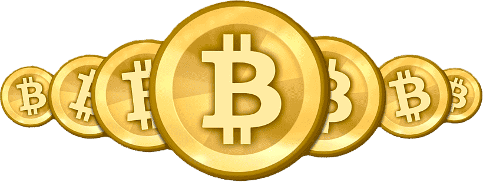
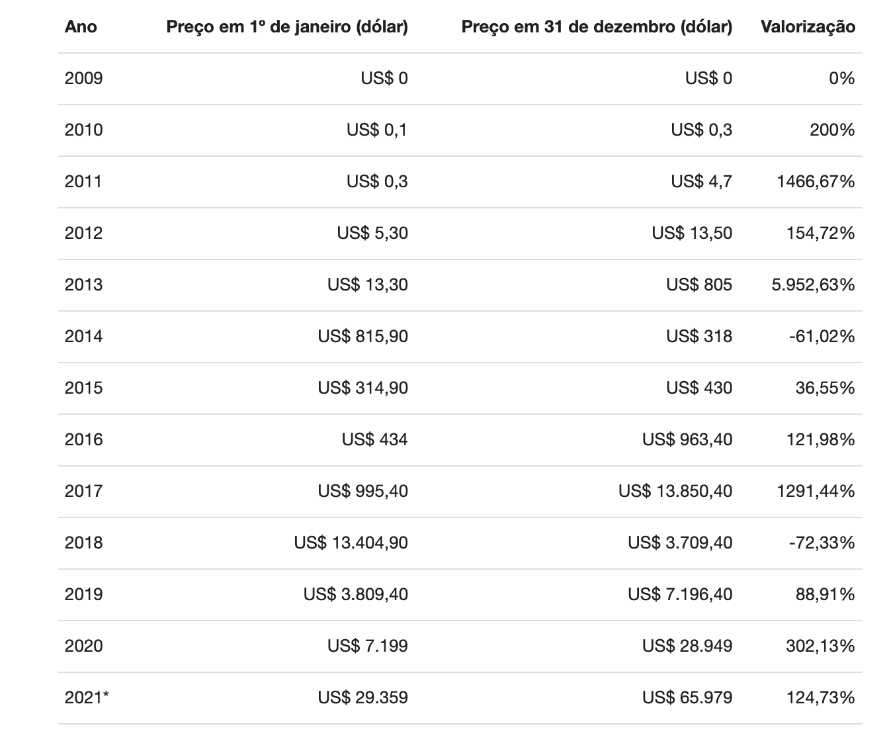
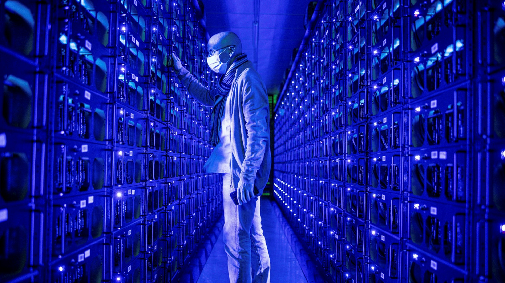

Guia sobre Bitcoin: conheça a origem da
primeira criptomoeda do mundo
A história do Bitcoin é cheia de mistérios e até hoje ninguém sabe ao certo quem
criou essa criptomoeda, considerada como a primeira a ser minerada no mundo
O que é Bitcoin?
O Bitcoin é uma forma de dinheiro eletrônico peer-to peer (ponto a
ponto) que pode ser transferida sem o intermédio de instituições
financeiras.
Na prática, isso significa que dois indivíduos, mesmo morando em
países diferentes, podem enviar BTC um para o outro sem precisar
de um banco ou de uma empresa de remessa internacional.
As transações são confirmadas na blockchain, um banco de
dados enorme que registra todas as negociações dos usuários.
Essa tecnologia nasceu junto com o Bitcoin, e funciona de tal forma
que os próprios participantes são os auditores da rede.
Como não há uma terceira parte envolvida, mandar Bitcoin de um
país para outro costuma ser mais barato e rápido do que transferir
moedas fiduciárias.
O BTC é digital, descentralizado e não é controlado por governos,
empresas ou pessoas. Portanto, nenhuma Casa da Moeda precisa
imprimi-lo e nenhum Banco Central tem o poder de controlar o seu
preço. Seu valor depende principalmente da lei de oferta e da
procura.
Quando surgiu o Bitcoin
O Bitcoin surgiu em 31 de outubro de 2008. Naquele dia, o
criador (ou criadores) da criptomoeda, que se esconde sob o
pseudônimo de
Satoshi_Nakamoto, enviou um e-mail para uma
lista de pessoas interessadas
em criptografia. No corpo da
mensagem, ele escreveu que vinha trabalhando “em um novo
sistema
de dinheiro eletrônico totalmente peer-to-peer, sem
terceiros confiáveis”.
Ele também inseriu um link com o white paper (manual) da
criptomoeda, em inglês. No documento,
com nove páginas,
Nakamoto descreveu resumidamente os fundamentos do Bitcoin,
baseados em quatro pontos
principais:
É uma rede peer-to-peer para evitar o gasto duplo (possibilidade de
enviar as mesmas moedas mais de
uma vez); sem intermediários,
como bancos; permite o anonimato dos participantes; e usa Prova
de
Trabalho (um tipo de algoritmo) para gerar Bitcoin (processo que
ganhou o nome de mineração) e
prevenir o tal gasto duplo.
No manual, Nakamoto também estipulou que o BTC tem oferta
finita. No total, apenas 21 milhões de
unidades podem ser
mineradas (criadas) até 2140, o que o torna escasso. Até o final de
outubro de 2021,
segundo o agregador Coingecko, 18,8 milhões de
Bitcoin já haviam sido emitidas.
Apesar de o Bitcoin ter sido lançado no final de 2008, o primeiro
bloco (nome do arquivo com informações
sobre transações) da
blockchain da criptomoeda só foi minerado no dia 3 de
janeiro de 2009. No bloco, chamado
de Gênese, Nakamoto escreveu a
mensagem criptografada “The Times 03/Jan/2009 Chancellor on
brink of second bailout for banks”.
O texto, que em português significa “Chanceler à beira do segundo
resgate aos bancos”, é uma alusão à manchete do
jornal britânico
The Times daquele dia. As palavras foram interpretadas como um
indicativo das motivações que
teriam levado Nakamoto a criar a
criptomoeda.
Crise financeira nos EUA e o Bitcoin
O white paper do Bitcoin foi lançado pouco mais de um mês após
o anúncio da falência do Lehman Brothers,
que foi o quarto maior
banco de investimentos dos Estados Unidos. A quebra do
conglomerado financeiro foi
o episódio mais emblemático da crise
financeira nos EUA, responsável por uma das piores recessões
econômicas da história.
A quase simultaneidade desses dois fatos fez alguns economistas
e entusiastas do mercado de criptomoedas se questionarem
se o
Bitcoin teria surgido como uma resposta à instabilidade financeira
daquela época. Fernando Ulrich, mestre em
economia e
especialista em criptomoedas, falou sobre os dois eventos em seu
livro “Bitcoin – A Moeda na Era digital”.
“Ainda que possa ser considerada uma mera coincidência o fato de
a moeda digital ter surgido em meio à maior crise
financeira desde
a Grande Depressão de 1930, não podemos deixar de notar o
avanço do estado interventor, as medidas
sem precedentes e
arbitrárias das autoridades monetárias na primeira década do novo
milênio e a constante perda de
privacidade que cidadãos comuns
vêm enfrentando em grande parte dos países desenvolvidos e emergentes”.
Vale lembrar que a crise financeira nos Estados foi gerada, em
parte, por uma desenfreada liberação de crédito fácil e
pela
especulação no mercado imobiliário.
O economista Fernando Antônio de Barros Júnior, professor doutor
da Faculdade de Economia, Administração e Contabilidade
de
Ribeirão Preto (FEA-RP) da USP, acredita que o “timing” entre os
dois eventos foi apenas uma coincidência.
“Eu acho que tem pouca probabilidade de o Bitcoin ter sido
lançado por causa da crise. No próprio white paper, é
possível ver
que o Nakamoto não estava tentando criar um ativo financeiro, mas
sim um meio de pagamento seguro e fora
do controle do governo”.
Cabe ressaltar, ainda, que as discussões sobre a criação de uma
moeda semelhante ao Bitcoin começaram antes de 2008.
Segundo
o Bitcoin.org, o conceito de criptomoeda foi descrito pela primeira vez em 1998
pelo engenheiro da computação Wei Dai.
O artigo de
Wei inclusive é citado por Nakamoto em seu white paper.
Diferença entre Bitcoin e moedas digitais
A principal diferença entre Bitcoin, demais criptomoedas e Moedas Digitais
de Banco Central (CBDC, na sigla em inglês) é a forma
de emissão e distribuição.
O BTC e as altcoins (termo usado para identificar qualquer
criptomoeda diferente do Bitcoin)
são descentralizadas. Ou seja,
não há governo ou país no controle. As regras, portanto, são
ditadas
pelos envolvidos nos projetos, bem como pelos usuários.
As moedas digitais de bancos centrais, por outro lado, são emitidas
e distribuídas por órgãos
governamentais. “As CBDC são
representações digitais das moedas fiduciárias dos países sendo
controladas pelos bancos centrais”, explicou Ricardo Dantas, CO-
CEO da corretora de criptomoedas Foxbit.
Na prática, portanto, uma moeda digital emitida por um Banco
Central é uma cópia virtual do
dinheiro corrente do país. Seu valor,
portanto, é determinado por uma autoridade monetária.
É diferente
das criptomoedas descentralizadas, cujos preços variam conforme
a lei da oferta e da procura.
Como comprar e vender Bitcoin
Por ser uma moeda descentralizada, sem interferência de nenhum governo,
as operações de Bitcoin são feitas diretamente entre os usuários
de maneira
criptografada. É o chamado peer-to-peer, em que algoritmos
matemáticos são utilizados para
validar as transações.
A corretora ou exchange é a plataforma que conecta essas partes
interessadas.
Ela será responsável por converter as criptomoedas
em dólar ou real por exemplo.
Antes de comprar Bitcoin, você precisa se
cadastrar em uma delas e transferir fundos para a
sua conta.
Da corretora, é possível depositar e sacar para a carteira de Bitcoins, um
endereço
público composto por números e letras. As carteiras
podem ser virtuais, em aplicativos,
ou físicas. Elas são protegidas
pela chave privada, uma senha que deverá ser guardada pelo portador.
Maiores altas e baixas do Bitcoin
O Bitcoin atingiu sua máxima histórica no dia 20 de outubro,
superando pela primeira
vez os US$ 65 mil. No Brasil, a
criptomoeda chegou a ultrapassar os R$ 370 mil em
algumas
corretoras.
Ao longo de sua breve história, no entanto, a criptomoeda foi uma
montanha-russa,
registrando períodos de alta valorização (bull
market) e momentos de quedas drásticas
(bear market). Confira
abaixo o histórico das maiores altas anuais do Bitcoin – e das
baixas.

De 1º de janeiro a 20 de outubro 2021
Bitcoin é seguro?
Para Mayra Siqueira, gerente geral da Binance no Brasil, o Bitcoin é
seguro. Prova disso,
falou, é que a blockchain, tecnologia por trás
da criptomoeda, nunca foi hackeada ao
longo desses 13 anos de
história. E isso se deve, continuou Mayra, principalmente
ao
mecanismo criado por Nakamoto, em especial a dois recursos: o
consenso e a imutabilidade.
“O consenso refere-se à capacidade dos nós (computadores ou
dispositivos
conectados à interface do Bitcoin), dentro de uma rede
blockchain distribuída, de
concordar com o estado verdadeiro da
rede e com a validade das transações. Já a
imutabilidade, por outro
lado, refere-se à capacidade da blockchain de impedir
a alteração
de transações que já foram confirmadas”, disse Mayra.
Na prática, esses dois recursos permitem que transações entre
pessoas
desconhecidas sejam realizadas sem a necessidade de
uma terceira
parte – como um banco ou uma empresa de remessa
internacional – para
garantir a transferência.
Mayra disse que, além de ter tecnologia confiável, o Bitcoin
também é
um investimento seguro. No entanto, falou, o investidor
precisa fazer
o dever de casa e estudar o BTC com cuidado, pois
ele é “considerado
de risco por conta da oscilação”.
O economista Fernando Antônio de Barros Júnior, professor doutor da
USP, também disse que o BTC é um investimento seguro.
Entretanto,
falou, é um ativo de alto risco. “Por isso, o investidor
deve fazer
aquilo que é recomendado por qualquer curso básico de
educação
financeira: ponderar a questão do risco e do retorno e
nunca
colocar todos os ovos na mesma cesta”.
Como minerar Bitcoin
Logo após a criação do Bitcoin, qualquer um podia facilmente
minerar a
criptomoeda em casa. Bastava conectar um computador
(com uma placa de vídeo
razoável) na rede do BTC e mantê-lo
ligado para resolver os complexos problemas
matemáticos.
Atualmente, no entanto, é praticamente impossível “extrair” Bitcoin
por meio de
um PC comum. Isso porque é preciso utilizar
equipamentos específicos para a função,
chamados de circuitos
integrados de aplicação específica (ASIC).
Mas não basta ter apenas um, dois ou três hardwares. Para
resolver os cálculos e levar
as recompensas, é necessário ter um
poder computacional enorme, e a cada dia a exigência
cresce
mais. Hoje, há fazendas de mineração com milhares
de equipamentos dedicados
exclusivamente à mineração de Bitcoin.
Dada a complexidade da tarefa e o alto investimento no negócio,
essas fazendas de
mineração costumam se organizar em pools
(conjuntos) de mineradores
que trabalham juntos para competir
pela validação das transações, aumentando as
chances de receber
a recompensa em BTC – quando um pool consegue vencer a
batalha,
os 6,25 BTC recebidos são divididos entre os participantes
na proporção do poder computacional entregue.

Fonte de Pesquisa: Infomoney
Desenvolvido pelo aluno André Lucas da Turma 18PWS4 da STEP COMPUTER ACADEMY.